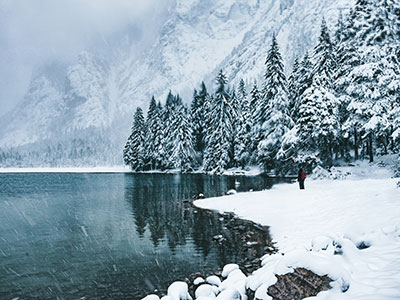
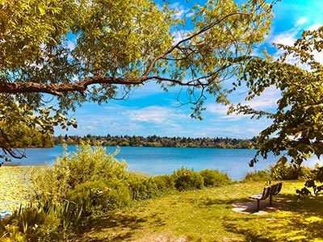

Zimní a letní radovánky: Kontrastní potěšení
Zima a léto, dvě protikladná roční období.
Každé nabízí svůj osobitý soubor radovánek, které zpestřují náš
život a přinášejí jedinečné zážitky.

Zimní radovánky
-
Sportovní aktivity:
Lyžování, snowboarding, bruslení, sáňkování, běžkování – zimní sporty slibují adrenalin a zábavu na sněhu.
-
Horké nápoje a útulná atmosféra:
Šálek horkého čaje, svařáku nebo kakaa v ruce, krása sněhové vločky za oknem a povídání s blízkými v křesle navozují příjemnou zimní atmosféru.
-
Vánoční svátky:
Kouzlo Vánoc s vánočním stromkem, dárky, cukrovím a koledami dodává zimě kouzelnou a nostalgickou atmosféru.

Letní radovánky
-
Sluneční paprsky a koupání: Opalování u bazénu, koupání v jezeře nebo moři a vodní sporty přináší osvěžení a letní pohodu.
-
Výlety do přírody: Turistika, cyklistika, pikniky v parku a procházky v lese umožňují vychutnat si krásu letní přírody.
-
Festivaly a grilování: Letní festivaly s hudbou a tancem, grilování s přáteli a letní večery pod hvězdnou oblohou zpestřují letní dny.
Ať už preferujete zimní sporty a útulnou atmosféru, nebo letní slunce a vodní radovánky, obě roční období nabízí pestrou paletu aktivit a zážitků, které obohacují náš život.
Tipy
- V zimě si užijte procházku zasněženou krajinou a pozorujte zimní ptáky.
- V létě si zkuste táborák pod širým nebem a pozorujte hvězdy.
- Zapojte do zimních i letních radovánek celou rodinu a užijte si společný čas.
Závěr
Zimní a letní radovánky, ať už aktivní nebo relaxační, nám dávají možnost zpomalit, užívat si krásu daného období a sdílet zážitky s blízkými. Vychutnávejme si kontrastní potěšení, které nám rok nabízí, a buďme vděční za každý roční čas.